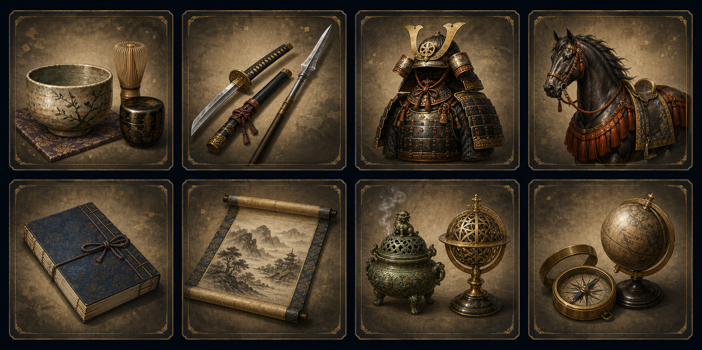

⛶
♪
？
⛶
戦国風雲記
タップして横向き全画面で開始
Tap to play in fullscreen landscape
📱 端末を横向きにしてください / Rotate your device
城追加モード
城名称
城位置 x
城位置 y
所属大名
国名
地図をクリック/タップすると x,y が入ります。確定するとその座標に城を配置します。
削除
閉じる
確定
城編集一覧
城名称
所属大名
国名
城Lv
城配置座標
城区分
城種類
削除
閉じる
CSV取込
城追加
確定
勢力・施設編集一覧
勢力・施設名称
支配大名
配置位置座標
近くの城
削除
閉じる
確定
全国武将一覧
武将名
所属大名
居城
統率
武勇
知略
政治
忠誠
閉じる
全武将列伝 / Chronicle
詳細 / Detail
家宝名鑑 / Treasures
閉じる

戦国大名の家宝
茶器、武具、甲冑、名馬、兵法書、書画、香炉・南蛮品、器具を収録。等級が高いほど忠誠と能力への寄与が大きくなります。
家宝名
分類
家宝等級
増加忠誠
効果
備考
武将詳細 / General
武将名
所属大名
居城
統率
武勇
知略
政治
忠誠
この武将を削除
◀ 前へ
次へ ▶
列伝 / Chronicle
閉じる
保存
大名編集 / Daimyo Editor
名声
金銭（貫）
兵糧（千石）
兵士数（各洲）
※兵士数: 全支配洲を指定値に設定（0 のまま=変更なし）
閉じる
適用
戦国風雲記
/ Sengoku Fuunki | クリックで操作 — Click to play | 全国64洲をヘックス戦で制覇せよ